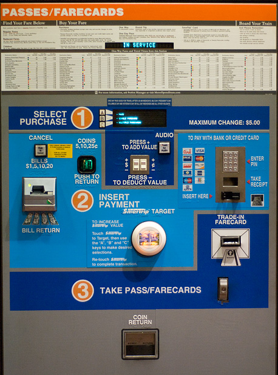
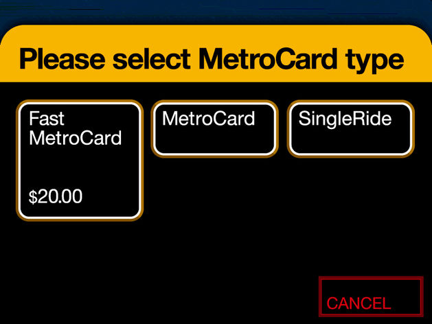

Introduction to Web Design and Computer Principles
CSCI-UA.0004-002
Mehan Jayasuriya
Week 9, 10/27/15
Understanding UX Design and Wireframing
People have feelings when they use products:
- Happy
- Satisfied
- Confused
- Frustrated
User experience (UX) design is the art and science of designing products that delight users
How does using this make you feel?

How does using this make you feel?

Pretty does NOT always mean good UX design
One artifact of UX design for websites is the wireframe
A wireframe is:
- A blueprint for our site
- A visual representation of the site's layout
- A document that allows us to design a site's UX before we write code
Why create a wireframe?
- Work through design problems quickly: sketching is much faster than writing code
- Taking the time to figure out the layout makes the process of coding your site faster
- Allows us to create assets we can show to clients to help them understand a site's design
Tools that can be used to create a wireframe: